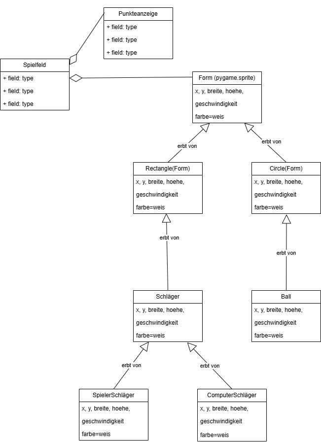

Objektorientierter Entwurf
Klassenkandidaten identifizieren
| Klassenname | Beschreibung |
|---|---|
Spiel |
Zentrale Steuereinheit – verwaltet Spielfluss und Punkte |
Ball |
Bewegt sich, prallt ab, besitzt Geschwindigkeit |
Schlaeger |
Zwei Instanzen – Position, Größe, Bewegung |
Spieler |
Kann Mensch oder Computer sein, erhält Punkte |
Spielfeld |
Spielfeldränder, Spiellogik, Kollisionsgrenzen |
Punktestand |
Verwaltung und Anzeige der Punkte |
Computer |
Computersteuerung für Gegner |
SoundManager |
Verwaltung von Sounds und Musik |
Anzeige |
Punktestand, Spielerinfos, Spielstatus |
Operationen identifizieren
| Verbalphrase | Subjekt | Objekt / Ergänzung | Bedeutung / Wirkung |
|---|---|---|---|
| soll ... entwickelt werden | (implizit: Spiel) | einfaches 2D-Computerspiel | Passiv: Spiel soll erstellt werden |
| muss ... gehalten werden | Ball | im Spielfeld, mit Schägern | Ball soll im Spiel gehalten werden |
| versuchen ... zu schlagen | Spieler | den Ball | Spieleraktivität gegenüber Ball |
| verfehlt | Gegenüber | den Ball | Fehler des Gegenspielers |
| trifft | Ball | Schäger / Rand | Auslöser für Richtungswechsel |
| prallt ... ab | Ball | nach Ausfalls-/Einfallswinkelprinzip | Reaktion auf Kollision |
| können ... bewegt werden | Schäger | auf und ab | Steuerbare Objekte |
| können ... gesteuert werden | Schäger | durch Mensch oder Computer | Steuerlogik |
| werden gezählt | Punkte | wenn Schläger den Ball trifft oder Computer den Ball verfehlt | Punktewertung im Spiel |
| ist | Ziel des Spiels | möglichst viele Punkte zu erhalten | Spielziel |
CRC-Karten (Class-Responsibility-Collaborator)
CRC-Karte: Spiel
| Class: Spiel | |
|---|---|
| Responsibilities | Collaborators |
| Spiel starten | Ball |
| Punkte verwalten | Spieler |
| Spielzustand steuern | Punktestand, HighscoreListe |
CRC-Karte: Ball
| Class: Ball | |
|---|---|
| Responsibilities | Collaborators |
| Bewegt sich | Spiel |
| Prallt ab | Schläger |
| Prüft Kollision | Spielfeld |
CRC-Karte: Schläger
| Class: Schläger | |
|---|---|
| Responsibilities | Collaborators |
| Bewegung auf/ab | Spieler |
| Kollision mit Ball | Ball |
CRC-Karte: Spieler
| Class: Spieler | |
|---|---|
| Responsibilities | Collaborators |
| Steuert Schläger | Schläger |
| Erhält Punkte | Punktestand |
| Verwendet KI | KI |
CRC-Karte: Punktestand
| Class: Punktestand | |
|---|---|
| Responsibilities | Collaborators |
| Punkte speichern | Spieler |
| Punkte anzeigen | Spiel |
CRC-Karte: Spielfeld
| Class: Spielfeld | |
|---|---|
| Responsibilities | Collaborators |
| Kollision prüfen | Ball |
| Grenzen darstellen | Spiel |
CRC-Karte: Computer
| Class: Computer | |
|---|---|
| Responsibilities | Collaborators |
| Berechnet Spielzug | Spieler |
UML
